Колір та мозок
Психологія кольору – це дослідження того, як кольори впливають на поведінку, настрій або фізіологічні процеси людини. Ідеї, пов’язані з колірною психологією, впроваджуються в сферах маркетингу та дизайну. Компанії вибирають кольори, які спонукають споживачів купувати їхню продукцію і покращують впізнаваність бренду. Кольори навіть використовуються в терапії для лікування різних захворювань.
Сприйняття кольорів – суб’єктивне, оскільки різні люди по-різному їх бачать і відповідно реагують на них. На сьогодні психологи виявили кілька універсальних істин про колір і його вплив на людину.
Так, наприклад, в залежності від того, які фарби найчастіше використовує в своїх малюнках дитина, і який колір є для неї найулюбленішим, можна виділити різні особливості її характеру.
Білий
Колір снігу, молока, бавовни, сукні нареченої. Він являє початок, легкість, досконалість, чистоту, мир, невинність. У лікарнях і госпіталях переважає білий колір – він має додатковий заспокійливий ефект та візуально робить простір яскравішим. Лікарі та медсестри носять білі халати, оскільки саме білий колір забезпечує відчуття чистоти і досконалості.
Цікаво, що в минулому він не асоціювався з радістю і чистотою, як зараз, а був кольором смерті та мовчання.
Однак цей же колір може викликати тугу і фрустрацію, якщо ми не знаємо, як скористатися цими можливостями.
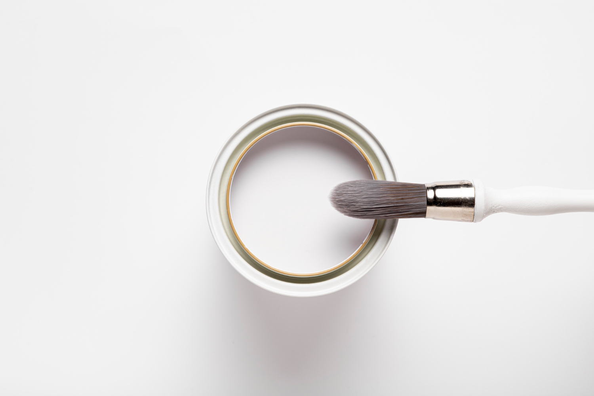
Жовтий
Це колір позитиву, оптимізму, молодості, надійності та креативності. Ми використовуємо в повідомленнях жовті смайлики, і навряд чи ви одягнете щось жовте, якщо сумуєте або у вас поганий настрій.
Дослідження показують, що цей колір покращує концентрацію уваги і активізує нервову систему. Жовтий колір ідеально підходить для офісів або інших приміщень, де ми повинні якнайповніше проявити свої творчі таланти.
Але слід зазначити, що жовтий колір дуже суперечливий. Він також пов’язаний зі зрадою, брехнею, жадібністю або божевіллям. Навіть діти плачуть частіше у жовтій кімнаті, а деякі люди відчувають певні труднощі з терпеливістю або із засинанням. У деяких культурах квіти жовтого кольору символізують розлуку. Цей колір також пов’язують з певними верствами суспільства – наприклад, повіями. В середні віки жовтий колір вважався кольором євреїв, яких часто виганяли з різних територій. І навпаки, в Китаї – це найбільш шанований колір, пов’язаний тільки з позитивними асоціаціями.
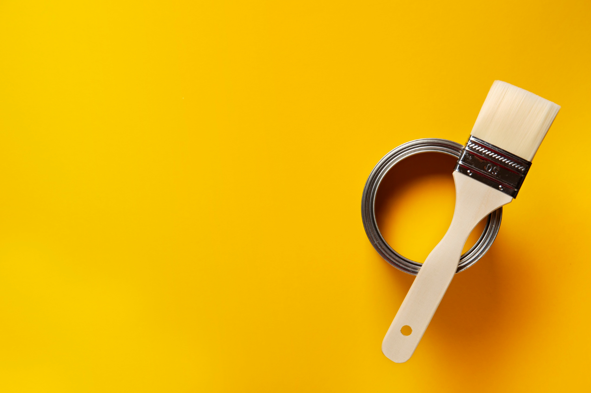
Помаранчевий
Помаранчевий – це теплий, веселий, осінній колір. Це комбінація жовтого та червоного кольорів, і вона приносить багато із позитивних асоціацій. У той час як жовтий примушує згадати про сонце, помаранчевий - це колір сходів і заходів сонця, які багато людей вважають заспокійливими.
Також цей колір миттєво привертає до себе увагу. Відповідно до психології кольору, помаранчевий – колір енергії, екстравагантності, трансформації та унікальності.
Недоліком цього кольору є те, що він може сприйматися як надмірний та може асоціюватися з бюджетними брендами.
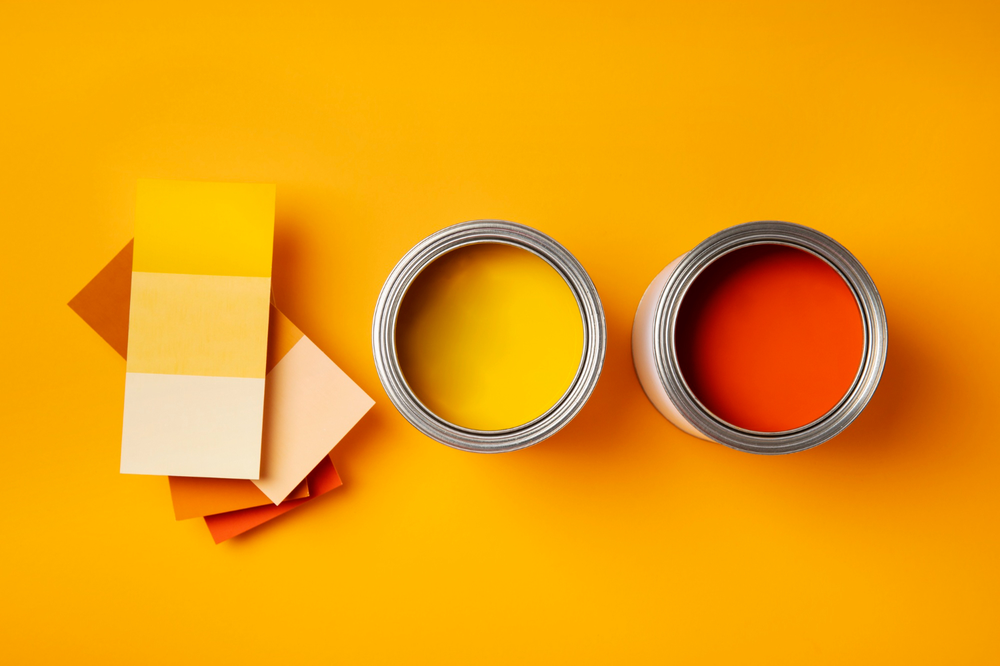
Червоний
Червоний - це колір, який викликає більш широкий спектр сильних емоцій, ніж інші кольори. Він може означати тепло, любов, пристрасть, хвилювання, енергію та впевненість. Деякі культури навіть вважають червоний колір супутником удачі, а в 2004 році дослідження показало, що футбольні команди, які мали червону форму, за статистикою вигравали найчастіше.
Червоний колір ми бачимо на світлофорі, на цінниках на розпродажі та продуктах харчування. Це колір терміновості, екстреності. Його неможливо не помітити, ми не можемо не звернути увагу на червону губну помаду або виправлення червоною ручкою в зошиті.
Цей колір також може змінити сприйняття людей. Один експеримент показав, що червоні таблетки є більш ефективними стимуляторами, ніж сині, хоча обох таблетках був однаковий склад.
Звичайно, можливі й негативні асоціації із червоним. Наприклад, фраза "як червона ганчірка" пов'язана з гнівом, у той час як червоний колір також може означати кров, небезпеку або попередження про небезпеку.
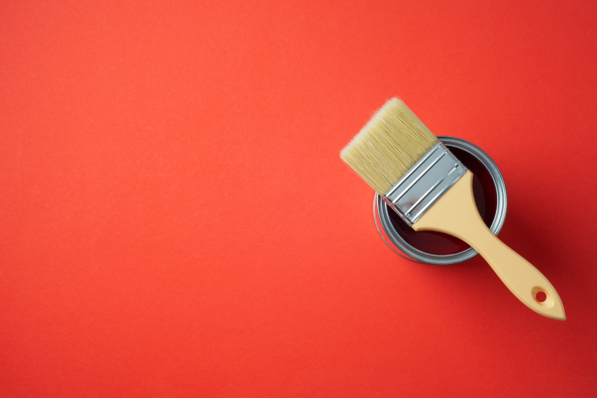
Рожевий
Згідно із психологією кольору, рожевий представляє солодкість, жіночність, чарівність, чуттєвість, колір оголеного тіла. Його також пов’язують з юністю та невинністю.
Рожевий колір відомий своєю здатністю заспокоїти і знизити тривожність. Навіть у деяких в’язницях стіни у приміщеннях загального користування пофарбовані у рожевий колір для того, щоб заспокоїти ув’язнених.
Не дивно, що є затяті противники рожевого, які вважають цей колір дратівливим, позбавленим смаку та сексистським. Найбільшу критику викликає колір фуксії, у багатьох він асоціюється з дешевими та неякісними речами.
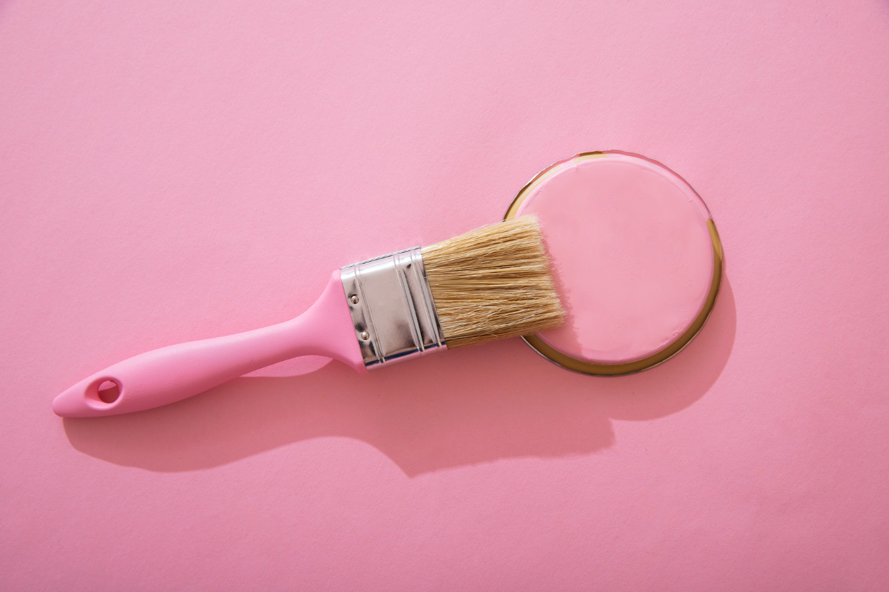
Фіолетовий
З давніх часів цей колір пов’язаний з королівською розкішшю і вишуканістю. Фіолетовий колір не має великого значення у природі, тому може здаватися екзотичним, загадковим і навіть духовним. Фіолетовий колір також має здатність активізувати та покращити сексуальність, і саме цей факт робить його ідеальним вибором для кольору подружньої спальні.
Незважаючи на ці позитивні якості, деякі люди пов'язують його з непрактичністю. Він асоціюється з ностальгією, фантазією, амбіціями, марнославством і непостійністю.
Надмірно цей колір застосовувати не можна, він дуже важкий для сприйняття.
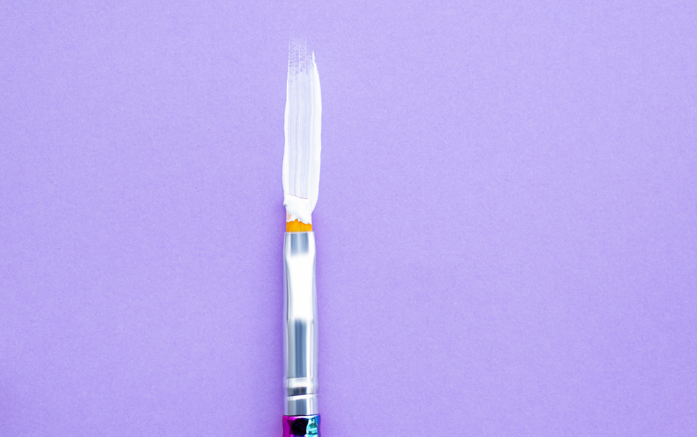
Синій або блакитний
Дослідження показують, що синій може підсилити творчий потенціал кожної людини. Крім того, було доведено, що синій колір має заспокійливу дію.
Наукові дослідження кажуть, що він може знизити частоту пульсу та температуру тіла, що, у свою чергу, добре впливає на сон.
Проте тривале перебування в оточені такого кольору викликає депресію і почуття смутку. Синій колір також пов’язаний з відчуттям холоду, а також із серйозністю та формальністю, що й пояснює його використання в багатьох корпоративних логотипах.
Наш мозок сприймає сині об’єкти, так ніби вони легші ніж інші, а саме тому спортивні снаряди невеликої ваги в тренажерному залі часто мають синій колір.
Цей колір не надто часто трапляється у продуктах харчування, оскільки він певним чином пов’язаний з отрутою і може бути причиною втрати апетиту (з іншого боку, саме цей факт може стати у пригоді тим, хто бажає схуднути).
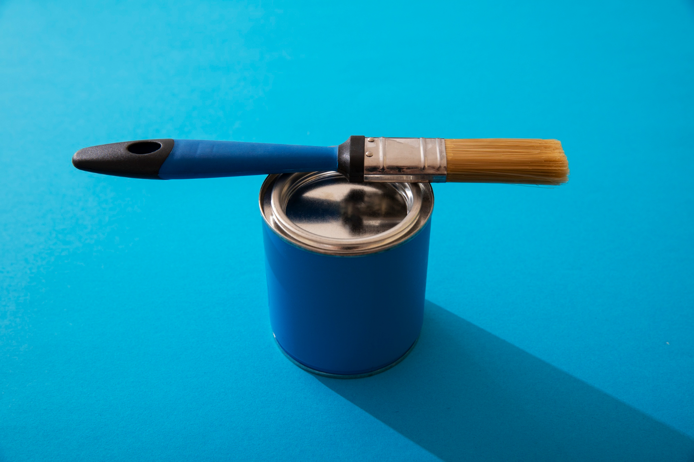
Зелений
Це найприродніший колір: колір трави, молодості, надії, здоров’я, родючості, грошей. Відповідно до психології кольору це також колір свіжості та гармонії, миру, спокою. Людей, які оберігають природу, також називають «зеленими».
Однак і в цього кольору є своя «темна» сторона. Він також асоціюється з отрутою, з тим, що отруює нас.
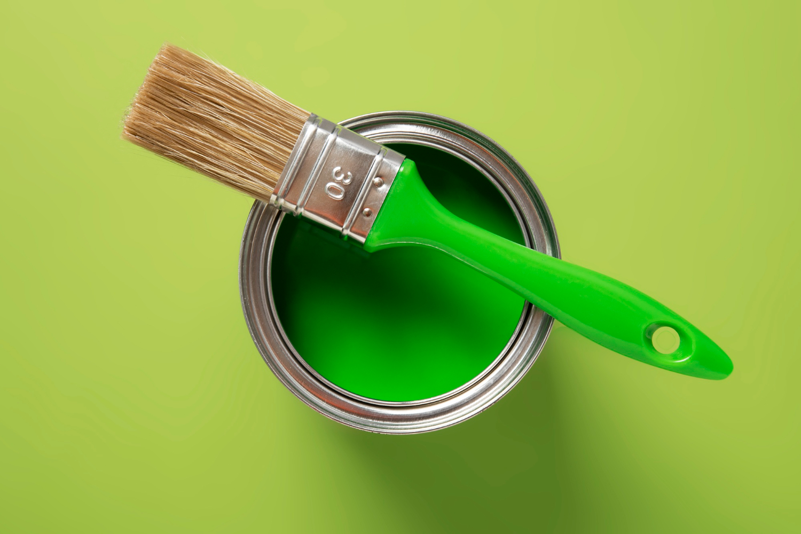
Коричневий
Коричневий - колір консерватизму. Втілює стриманість у всьому, надійність і скромність. Знак стабільності та згуртованості. Людина, що любить цей колір, прекрасний працівник і партнер, на якого завжди можна покластися.
Також цей колір асоціюється з лінощами, брудом, вульгарністю, бродяжництвом та потворністю. Він може здаватись застарілим, нудним.
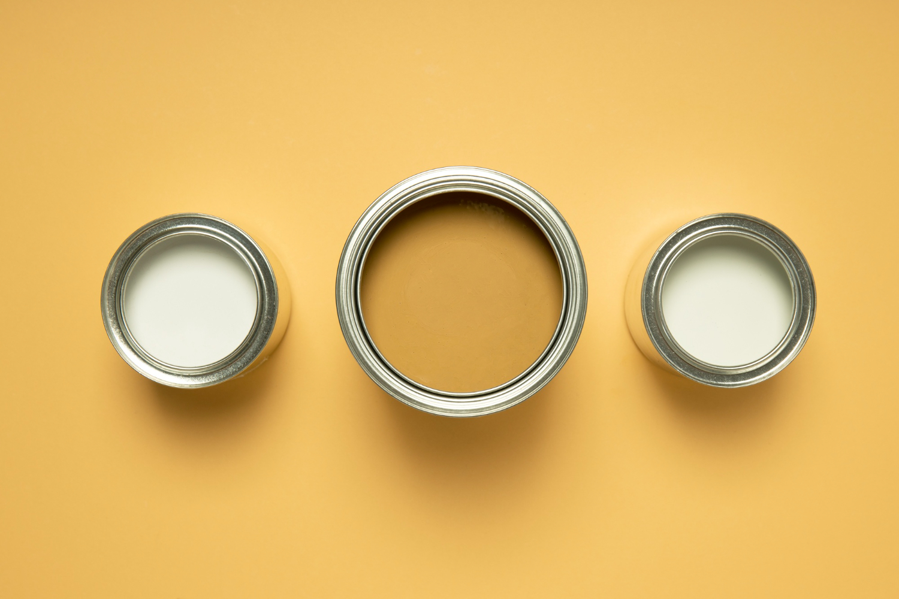
Сірий
Фоновий колір. Колір стабільності твердої, як скеля.
Негативний аспект цього кольору - печаль та меланхолія.
Позитивний - це реалізм та респектабельність. Це колір бізнесу в сучасному світі. Колір контролю емоцій.
У психології кольору сірий символізує, головним чином, старість, скромність та простоту. Він може бути темним, нудним або м’яким, і навіть таїти секрети і таємниці.
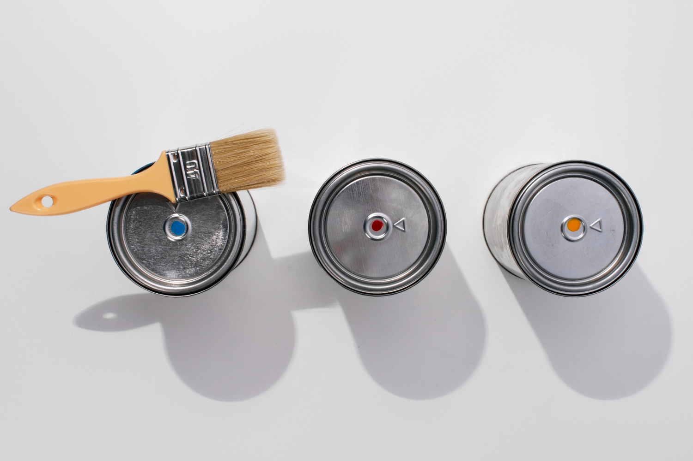
Чорний
Ще один колір-знак. І не обов'язково колір-знак хаосу та небуття, страшного та містичного. З давніх-давен чорний відповідав жіночності, її містичній постаті, справжньої жіночої сутності.
Однак, у той час як деякі вважають його похмурим і лякаючим, інші бачать у чорному знак винятковості, влади та авторитету, особливо коли йдеться про бренди. Також його часто називають "струнким" кольором, коли справа доходить до одягу.
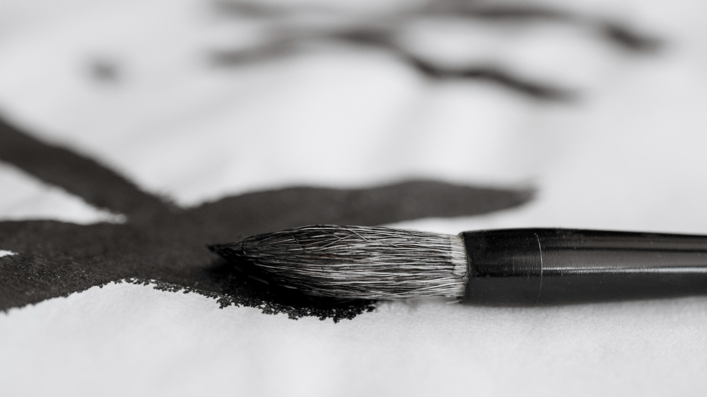